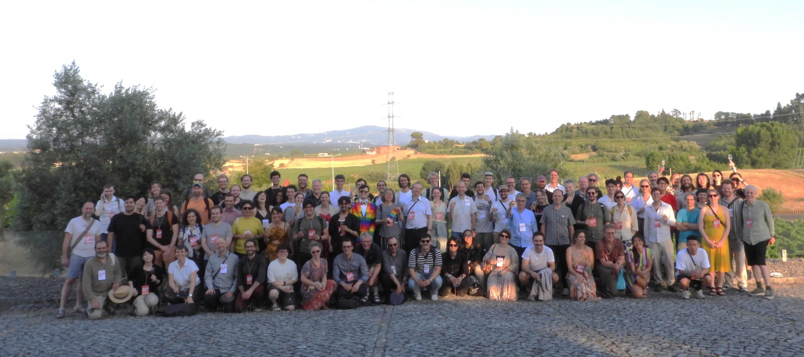

Welcome to ICAD
ICAD is a forum for presenting research on the use of sound to display data, monitor
systems, and provide enhanced user interfaces for computers and virtual reality
systems. It is unique in its singular focus on auditory displays and the array of
perception, technology, and application areas that this encompasses.
The 32nd ICAD 2027 Conference will be held in Athens, Greece.
The 31st ICAD 2026 Conference (https://icad2026.icad.org) was held in a distributed format across three tightly connected hubs on July 28-31, 2026.
